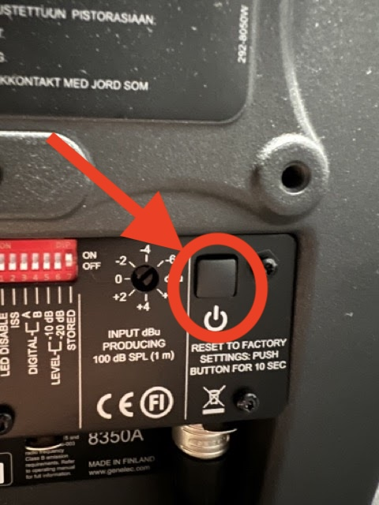
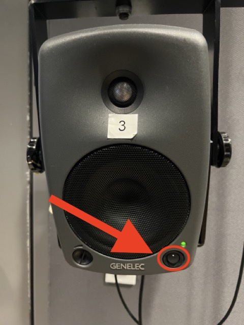
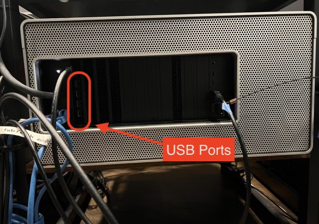
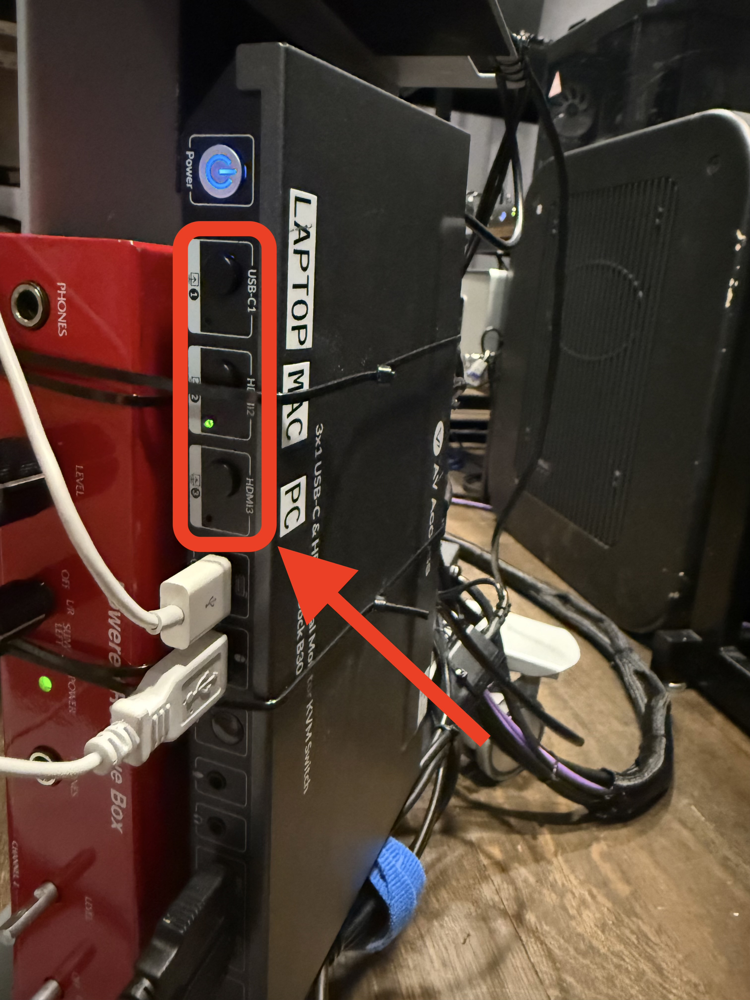
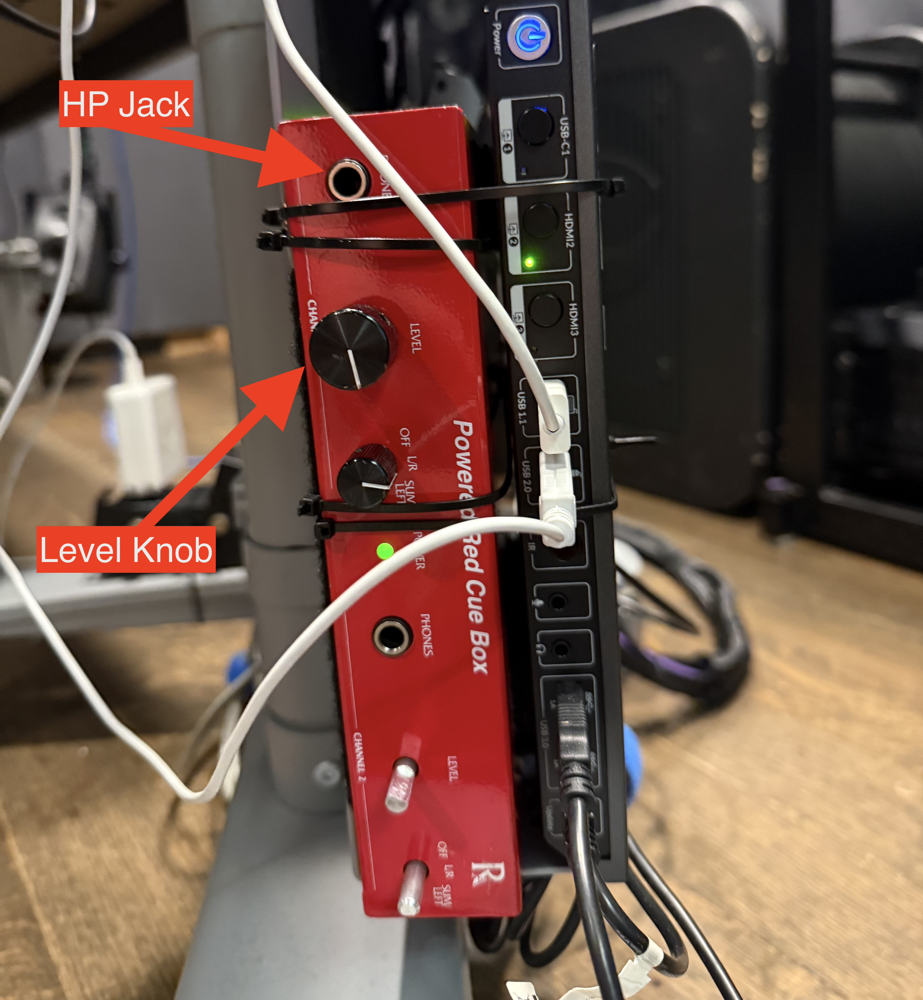
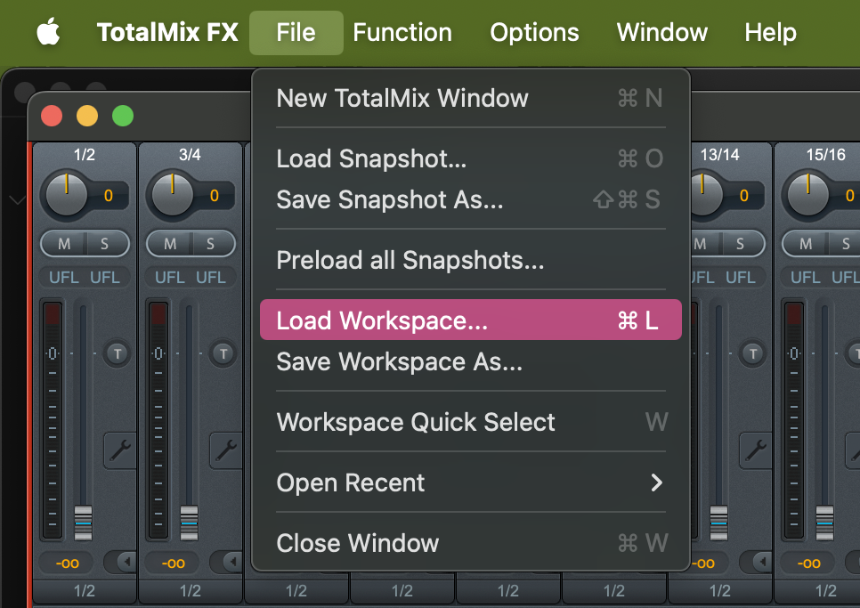

MPAP ROOM GUIDES
Research Lab Video Guide
Welcome to the Research Lab! This room is equipped with 23 speakers, ideal for working with multichannel sound. This guide will run you through the setup and operation of the system so you can begin working quickly and effectively.
You can use your own laptop if you have TotalMix FX installed. Click here for help with installation.
Table of Contents
Speakers
When you first get into the Research Lab, all speakers will be powered off. Among the 23 speakers, there are 2 large Genelecs, 20 small Genelecs, and one Genelec sub. The sub doesn't need to be switched on or off, but the large Genelec speakers must be powered on using the button on the back of each speaker, and the small Genelec speakers with the switch on the front of each speaker.

Power for Large Genelecs

Power for Small Genelecs
Mac Location
The Mac is located behind the desk, to the left of the subwoofer. Connect any external drive you may have directly to the USB slots here.

In order to use the equipment with your personal laptop instead, connect to the Thunderbolt cable on the desk.
KVM Switcher
Attached to the back of the monitor stand is the KVM switcher. Selecting LAPTOP, MAC, or PC routes the display, keyboard, mouse, and MADIFace USB audio interface to the chosen device.

Headphones
Plug your headphones into the red Cue Box connected to the KVM Switcher. Adjust the volume with the level knob.

TotalMix
In TotalMix FX, load the "TotalMix2025.tmws" workspace from the Desktop to ensure the speakers are routed correctly to the audio interface. Once loaded, you can use the jogwheel on the RME Control as a master volume control. You won't need to mess with TotalMix further than this, but to learn more, check out our TotalMix Guide for more in-depth information.

Routing
Whether you're using a DAW or playing multichannel media directly from system audio, select the corresponding link below.
End-of-Session Checklist
When you are done with your session, ensure you have done the following:
- Turn off all speakers
- Switch the KVM Switcher back into MAC mode
- Turn off the lights, and make sure the de-humidifier is powered on.